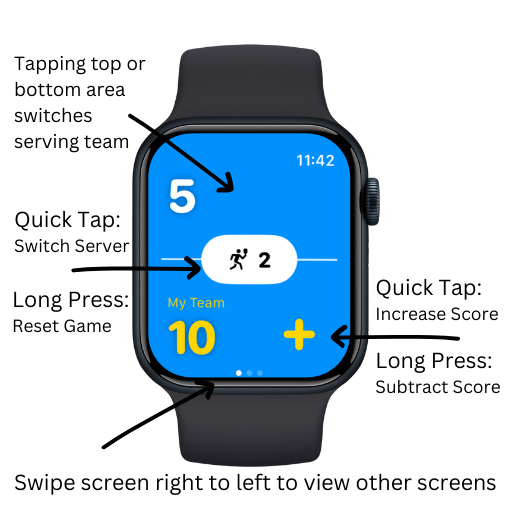

Wrist Score
Wrist Score is a super simple, glanceable pickleball scoring app built for Apple Watch and iPhone. The intuitive design lets you easily keep track of score, server, and win % stats.
Watch‑First Scoring
Use your Apple Watch to keep score in real time: tap to change serving team, tap or long‑press to adjust the score, and track server 1/2 with a single glance.
Mirrored iPhone & iPad View
See a large, easy‑to‑read scoreboard on iPhone and iPad that mirrors the watch, along with your win percentage and game stats.
Simple, Privacy‑Friendly Design
Scores and stats are stored locally on your devices. No accounts, no ads, and no external servers.
How to Use Wrist Score
Quick UI guide for Apple Watch. Tap to change serving team, adjust scores with quick taps or long‑presses, and swipe to view other screens.

About Wrist Score
As a passionate pickleball player, I wanted a way to keep score that felt as natural as glancing at my wrist between points. Wrist Score focuses on fast, reliable scoring with a layout tuned for Apple Watch.
The companion iPhone and iPad views give you a clear scoreboard and win‑percentage stats without adding complexity. No logins, no clutter—just a modern, “liquid glass” style interface that gets out of the way while you play.